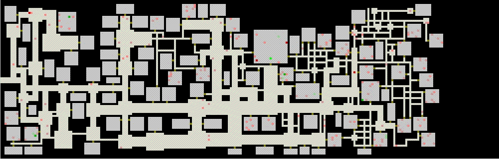
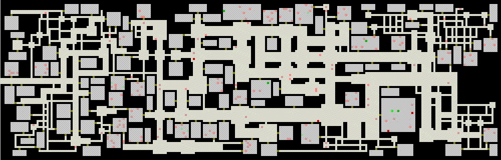

TUNNELER DEMOs
Both these demos show what a single Tunneler and its offspring
can do. The original Tunneler starts off at the opening on the left side of the
map, and you can see how baby Tunnelers can have smaller or larger tunnelWidths
than their parents. You can also see how rooms and anterooms are made.
MOBs are depicted in red, and treasure in green. We always put the most valuable
treasure (bright green) in the largest room, and let it be guarded by the largest
group of MOBs, which always includes a member of the highest ranking class of
MOBs (formerly called a boss monster). We expect that programs using
the DungeonMaker will use much more sophisticated methods of object placement,
but this can only be implemented when one knows what kinds of objects are to
be placed and what their in-game-relationship is.
In the first demo, Tunnelers first get babies with larger tunnelWidth,
so the standard 3-square-wide tunnels are followed by wider tunnels (which take
up much space), and then the dungeon-generating process switches to ever narrower
tunnels.
tunneler demo # 1

There is a large variability in outcomes, and while in most cases the map is
almost filled, sometimes the Tunnelers die out after filling only a small part
of the available space. Such dungeons should usually be rejected by a playability
test. It would be easy to implement a count on the number of squares that have
been changed in the dungeon-making process, and to reject dungeons with too
little activity. This would also make it possible to wind down the construction
process when the dungeon has reached a predetermined size, an option we consider
for the next version of the DungeonMaker.
In the second demo the Tunnelers first become very narrow, then wide, then
narrow again. Since we can ensure that large rooms are only built adjacent to wide
corridors, such a design can ensure that the largest rooms with the biggest
treasure are far from the dungeon entrance.
tunneler demo # 2
